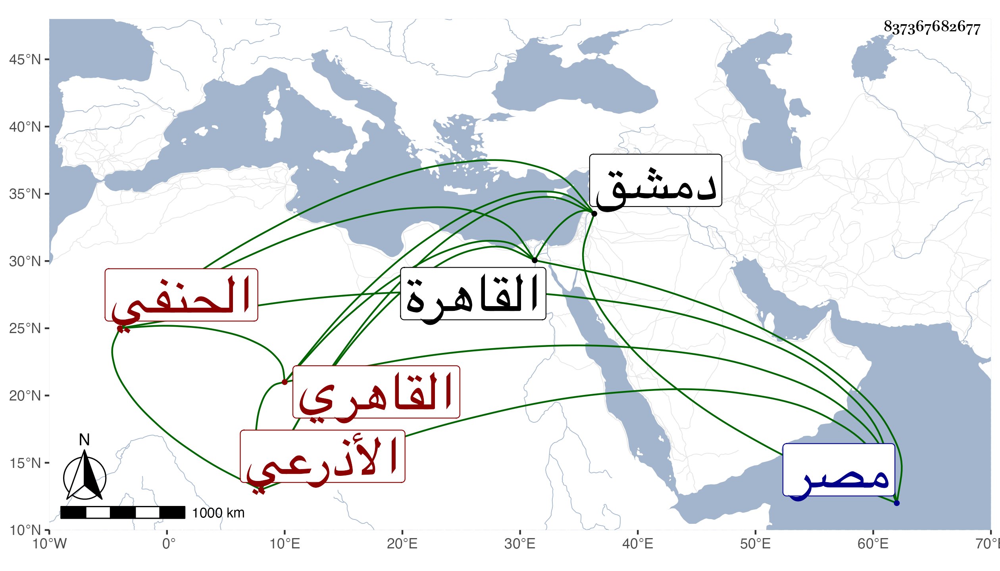

0902Sakhawi.DawLamic.ITO20230111-ara1.EIS1600.837367682677
Biography ID: 837367682677
81
محمد بن أحمد بن محمد بن إبراهيم بن إبراهيم بن داود بن حازم الأذرعي الأصل القاهري الحنفي أخو مريم . ساق شيخنا نسبه في معجمه وسقط من نسبة أحمد أيضا فهو محمد بن أحمد بن أحمد بن محمد إلى آخره . ولد سنة ثمان وثلاثين وسبعمائة بدمشق وأحضر على صالح الاشنهي وأسمع على الصدر الميدومي والعز ابن جماعة وأبي الحرم القلانسي وأخذ عن الشيخ شمس الدين الموصلي وأجاز له نظم المطالع إجازة خاصة مع غيره من تصانيفه وسمع منه قصائد من نظمه وولى مشيخة الجامع الجديد بمصر وخطابة جامع شيخو ، وحدث سمع منه غير واحد من شيوخنا أعظمهم شيخنا العسقلاني وذكره في معجمه وقال كان وقورا ساكنا وقال المقريزي في عقوده أنه لما قدم القاهرة اختص بشيخو فاستقر به خطيب جامعه فعز جانبه عند الأمراء وتمكن من اقتمر الحنبلي نائب السلطنة وإليه وإلى أبي وكان صديقه أسند جدي لأمي الشمس بن الصائغ وصيته ولذا كنت أنزله منزلة العم وحدثني بأشياء وأجاز لي وكان خيرا فيه سكون وحشمة مع رأي وديانة وشهرة ورياسة . مات في ذي القعدة سنة خمس .
